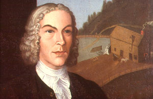

|
by Stefan Bielinski Abraham E. Wendell was born in 1715 the third of the eleven children of Albany attorney Evert Wendell and his wife Engeltie Lansing. Called Abraham Evertse to prevent confusion with the other Abraham Wendells then living in greater Albany County, this Abraham did not marry. Without children of his own, he lived first with his parents and later with his youngest brother, Philip Wendell - who was born in 1734. As the second son, Abraham seems to have been groomed to manage his father's broad-based business assets while his older brother Johannes practiced law - a valuable connection for the young businessman. His father's will, written in 1749, named Abraham as co-executor and singled him out for special consideration. Calling him "my dear trusty, faithful, beloved, honest son," Evert Wendell left Abraham extensive property on the southside of Albany, several additional city lots, his farm on the Normanskill, and all buildings (which included saw mills, grist mills, and a brew house). Instructed to provide for Philip, Abraham also was left his father's negroes after his mother's death. With the passing of his father in 1750, thirty-five-year-old Abraham E. Wendell was a wealthy Albany property holder and businessman. Perhaps because he had no family of his own, Abraham E. Wendell did not achieve the political prominence of his father or of other Wendell family members. Qualified to vote as early as 1742, he was not elected or appointed to offices or positions in the Albany government. He also did not become a pewholder at the Albany Dutch church until after the passing of his mother in 1769. Although he was identified as a merchant in 1756 and was assessed in the top five percent of city property owners for two decades after, Abraham E. Wendell was conspicuous by his absence from leadership positions in Albany business, politics, and social life. In addition to his bachelor brother, their State Street home included a number of slaves and also Margaret, an "Indian squaw" whose indenture Abraham E. Wendell had purchased in 1763. He survived the American Revolution without playing a visible part and his pasture land was used as a haven for refugees in 1777. In 1782, he was named executor of the will of his brother-in-law, Barent I. Staats. In 1788, his first ward property was configured on the city assessment roll. By 1790, Philip Wendell was living alone with five slaves in their first ward home.
Portrait of Abraham E. Wendell by John
Heaton about 1737. This was one of seven commissioned portraits
of family members. See Albany Institute of History and Art: 200
Years of Collecting, edited by Tammis K. Groft and Mary Alice
Mackay (New York, 1998), 51-52. Another painting of AEW as a child
was done by Nehemiah Partridge about 1719. It will appear here in
the future! All of these beautiful
paintings are in the collections of the Albany
Institute of History and Art.
The Wendell property
on the Southside of Albany extended south from the Wendell home
on upper State Street - opening up to include much of the land south
of State and west of South Pearl Streets. The boundaries of Wendell's
land are shown on the De
Witt map of 1794 - which also show Wendell's mill complex on
the Beaverkill. first posted: 4/10/01; revised 6/15/11 |
{kind=link}